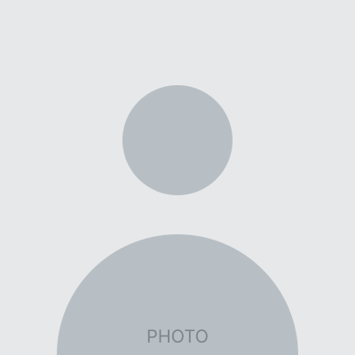

[クライアント名]様 ご提案
Why
Now
依頼から公開までの日数が、この2年で2倍になりました。
提案の中心
サイト改修の判断を、部署ごとの合議から担当者1人の決裁に変えます。確認の往復を減らし、公開までの日数を短くします。
各段階の終わりに、御社の担当者と内容を確認してから次へ進みます。
担当者5名に話を聞き、依頼から公開までの手順と日数を一覧にします。
誰が何を決めるかを表にまとめ、御社の承認を取ります。
次のLP制作で新しい手順を使い、日数を前と比べます。
目標
いまは依頼から公開まで平均30日かかっています。確認の往復を減らし、半分以下にします。
※ 30日は2026年4〜9月の12案件の平均（御社の管理表から算出）

担当
〇〇 太郎 / 〇〇株式会社 代表取締役